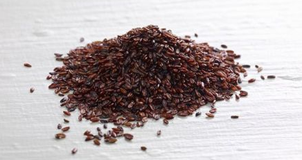
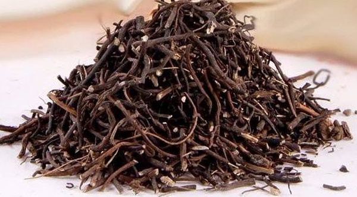
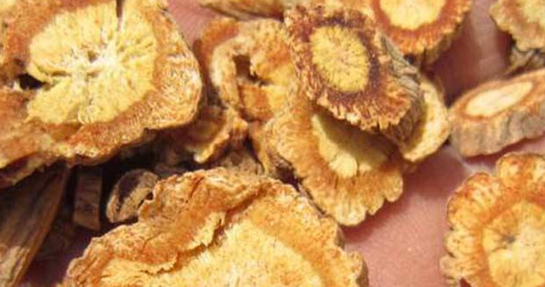

降尿酸最厉害的草药
尿酸是人体嘌呤代谢产生的正常产物，之所以谈到降尿酸，是因为当尿酸的代谢不足导致尿酸累积过多的时候，会造成很严重的后果—高尿酸性关节炎，也就是常说的痛风。所以今天给大家介绍几种降尿酸最厉害的草药。
首先要注意区别的是，这里说到的是土茯苓，而不是茯苓。虽然只有一字之隔，但是是完全不同的两种中药，茯苓是一种真菌的干燥菌核，而土茯苓是一种百合科植物（名叫菝葜）的干燥根茎。
功效作用：土茯苓有祛湿、通淋、通利关节、解毒的功效，很多古籍中也提到了，土茯苓能利湿去热、通络利关节，同样也对关节痹痛有很好的效果，这也就是它能作为关节炎治疗药物的依据。同时土茯苓能增强排尿排水系统，这也促进了体内代谢物的排放，所以也能加速嘌呤代谢，避免尿酸在体内的累积。
适宜人群：适用于有风湿问题和尿酸过高的人群，有利湿和降尿酸的作用。当然也可以用于治疗小便不利、女性经血不调和带下等问题。因为还能清热解毒，所以对疖肿、疥癣、梅毒也同样有很好的功效。一般治疗血热、咽喉肿痛、女性问题，是把土茯苓和金银花、黄连、栀子、瞿麦等一些药材一起搭配，若是治梅毒的话就再加上一些茜草、草乌、黑云香等等。
2、车前草
车前子也可以叫车前草、车前、平车前、长夜车前，是一种常见植物，经常可以在山区见到生长，尤其爱在水边、菜圃、路边生长。而作为中药材的要用部分的话，是在春秋季节，采集的种子果实，然后取出杂质。根据炮制方法的不同，还有车前子、炒车前子、盐车前子、酒车前子的分类。

功效作用：车前子的在本草中记载，归入肝、脾、肾、膀胱经，所以它有利水、祛湿、解毒、清热、明目、通淋的功效。
适宜人群：所以车前子对于下焦湿热有很好的通利作用，利水利尿，能够治疗小便不利、尿血，对于去除湿痹也是有非常好的效果，所以也能用来治疗湿疮以及风湿性关节炎之类的病症。同时也是加速代谢，所以对降尿酸也有一定的作用。现代发现车前子还有止咳化痰的风险，所以已经开始用它来治疗慢性气管炎。
3、金钱草
金钱草其实是很常见的一种小草本植物，也有很多人把它作为一种家庭绿植、小盆栽，它也有铜钱草、一串钱、黄疸草、铺地莲等等一些别名。金钱草喜阴湿、忌高温，所以如果是家庭养殖的话要注意室温，而它在野外生长的话，尤其喜欢在临近水源的地方，比方说路边沟旁、山坡草地，在长江以南的地区属于很常见的。
功效作用：金钱草的全草都作药用，有消炎、解毒、利尿、清热、祛风、排石、杀虫、止痛、生血的功效。
适宜人群：因为金钱草对清热利尿、消炎止痛这一方面有很好的效果，所以它能够用于治疗黄疸、急慢性肝炎、口腔炎、泌尿感染甚至肾炎，以及毒虫咬伤、痢疾等。一般情况下如果是治疗接触性皮炎或者像风湿性关节炎、肩周炎，就直接用金钱草煎水然后熏洗就可以起到效果。而且它还能通淋、排石，所以能降尿酸，也可以说是对治疗和预防结石有很大的帮助，像尿路结石、肝胆结石，可以直接用金钱草煎汤或者茶饮，搭配大黄、郁金效果更好。
4、萆薢
萆薢分为绵萆薢和粉萆薢，药用部位是二者的根茎，一般像浙江、福建那边地区比较常见。作为中药材的话，绵萆薢一般是制成不规则的斜切片，是黄棕色或者黄褐色的外皮，切面介于灰白色到浅灰棕色都是正常的；而粉萆薢的话，一般是不规则的薄片，外皮是灰棕色或者棕黑色，切面则是黄白色或者淡灰棕色。
功效作用：萆薢归于胃、肾经，有利水祛湿、祛风、止痛、化浊、除痹的功效。
适宜人群：由于萆薢有祛湿除痹的作用，所以经常用它来治疗风湿疼痛，能够通络除痹，对关节屈伸不利有很好的作用，尤其是还可以和牛膝、附子一起合用，主治关节寒湿。而根据它利水化浊的功效，是治疗小便浑浊的上等药材，经常是搭配益智仁、石菖蒲来作茶饮，同样对于尿酸过高形成的结晶也是有一定作用，能有一定的降尿酸的作用。
5、威灵仙
威灵仙也跟大多数中草药一样，是以根茎入药，它主要是生长在云、贵、川等地区比较多一点，还有广西、广东、安徽等。尤其威灵仙对气候和土壤的要求其实不严，但是喜欢富含腐殖质的位置，所以灌木丛、山谷沟这些富含腐殖质和相对来说比较湿润、阴凉的地方是最好不过的。

功效作用：威灵仙有利湿、祛风寒、消炎、通络、止痛以及化痰行气的功效。
适宜人群：威灵仙的功效繁多，所以在不止在汉族有应用，同样的在蒙族、苗族、土家族的医药史上，它也有很多的应用。因为有利湿、祛风、通络止痛的功效，所以威灵仙能治疗风湿骨痛、牙痛、头风、关节麻痹、腰腿痛等等一些病症，而且它利尿、消炎，所以降尿酸、黄疸、黄疸型传染性肝炎也有一定的治疗效果。而且威灵仙还有一个独特的地方时，能够对食道的异物有一个化解的作用，所以鱼刺卡喉咙也能用它来治疗。
6、防风
防风在本草纲目中受到尤其的赞誉，夸它是除风去湿的仙药，而它本身是喜欢凉爽干燥的气候条件，所以华东地区、河北、黑龙江、内蒙这些地方比较生长的比较多。入药的部分是它伞状的根部，在春秋两季采收新鲜的防风植物草本，然后留下根茎，洗干净之后用水浸泡，切片晒干后就能直接入药了。

功效作用：从本草、药类法象等众多古籍中记载的来看，防风有祛风、利湿、解表、止痛的功效。
适宜人群：防风因为有祛风利湿的作用，所以对于脾虚湿气重的人有很好的祛湿作用，从一定程度上也能达到一个增加排尿、加强代谢降尿酸的作用。又能解表，所以对治疗风疹、皮肤瘙痒都有很好的效果，还能治疗风湿引起的关节疼痛等等一些情况。如果是把防风与黄连、甘草和蕤仁一起熬制汤药，可以制成蕤仁膏，对于眼疾有非常好的疗效。
结语：关于降尿酸最厉害的草药就介绍这六种，除此之外，尿酸偏高的人群尤其是在饮食上面要格外注意，无论是中药还是西药，尿酸的含量也只是在一定程度上有所降低，如果病症的根本得不到控制，药物都是白费的。所以平时要少吃内脏和海鲜这些嘌呤含量高的食物，而且要忌酒，尤其是啤酒。